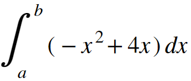
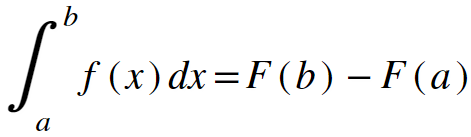

Back to Home
Keaton Hawkins AP Calculus AB Final
Let's imagine we're trying to find the area underneath the curve -x2 + 4x between two points on the x-axis, x = a, and x = b. We can represent that with the following integral notation:
\
Recall that an integral can be thought of as an "antiderivative." Finding an integral comes down to asking what function has a derivative that is the function inside the integral. Let's imagine that for any function, its antiderivative can be represented with the capital version of the letter that represents the function. So, the antiderivative of f(x) would be F(x). In the case of our function, f(x) = -x2, F(x) would be -x3/3 + 2x2, right? We can check by taking the derivative of F. It is the same function as f, so we know we've done our integral properly.
Recall that there's a problem with this, though. Technically, there are an infinite number of functions that are the antiderivative of f, because you can add any constant you want to the end of the antiderivative, and the derivative of that antiderivative won't change. Why? Because the derivative of any constant is zero. How do we remedy this to find exact areas? Well, there's one piece of information we haven't used yet: the lower bound of the integral. Consider what would happen if we lowered the upper bound until it equaled the lower one? In other words, what would the value of our integral, evaluated from a to a be? Of course, it would be zero. That should make sense, because taking the integral from a to a is like asking for the area underneath the curve at a single point. If the upper and lower bound are on top of each other, there is no area between them, so the integral is 0. How can we include this in our antiderivative calculations?
The answer is that we take the value of the antiderivative evaluated at the upper bound, and subtract off the value of the antiderivative evaluated at the lower bound. This ensures that whenever the upper bound is equal to the lower bound (remember that sometimes we consider the upper bound to be a variable, as explained on the antiderivatives page) the value of the integral is zero. And that's it. For any function, f(x) with an antiderivative, F(x):
